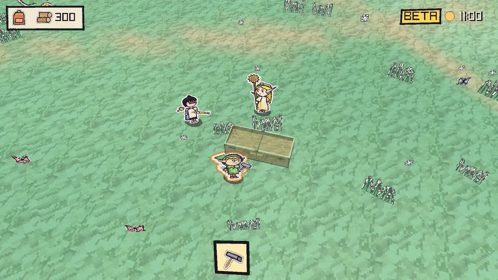

一片蜡笔涂成的草地中央，停着一只没有轮子的矮木箱；三个像从练习本上剪下来的小人围在旁边，其中一个被淡橙色的描边圈着。这是 SETO（@Setodev92）在 2026-11-15 发出的一段约 39 秒、1920×1080 演示视频的封面静帧。帖文只有一句：一款能自己打造、改装小车的生存游戏，为什么不呢。游戏名叫 Rakuworld，已在 Steam 以抢先体验上架，开发者与发行都写着 Seto92。本页以这款游戏为中心，收录作者原帖与两条回复的全文中译，并用商店页核对可公开核对的规格；不转载视频，也不全文抄录商店文案。

这是一款什么游戏
Rakuworld 是一款由 SETO 独自开发的群体生存游戏，美术像一本逃进三维里的小学生练习本：蜡笔、彩色铅笔和白色剪纸边缘。商店短介说，玩家先画出自己的英雄，再带它去面对十一张纸与蜡笔世界里的敌群；目前写着 36 名英雄、22 个首领、可进化的武器，以及 1 到 4 人合作。Steam 商店页在 2026-11-15 显示发售日为 2026 年 10 月 31 日，状态为抢先体验，平台为 Windows，开发者与发行商均为 Seto92。商店页所示标价是 S$5.89，这是新加坡地区商店页上的价格，会随地区与时间变化 ⚠️。
作者在 11 月 5 日的帖子里写道，Rakuworld 已在 Steam 以抢先体验推出，并感谢玩家的建议，自己正朝着 1.0 前进。商店里开发者自己的说明更具体一些：游戏已经可以从头玩到尾；计划再做约 6 到 9 个月的抢先体验，大约每 4 到 6 周一次较大更新；完整版打算把世界加到约 20 张并加上尾声，补上每张世界的配乐，以及「内置的线上合作」（并注明今天用的是 Steam Remote Play Together）。抢先体验期间不打算涨价，正式版上市时价格可能会提高。这些都是开发者在商店页上的计划，不是已经完成的内容 ⚠️。
有一处需要并置来看。作者在中文回复里写过「支援最多 4 人本地合作遊玩，也支援線上合作」。商店功能列表给出的是单人、分屏合作、Remote Play Together 和家庭共享，没有单独列出 Online Co-op 分类；开发者说明也把「内置线上合作」写成完整版才计划加入的内容，并写明今天是 Remote Play Together。本页把「线上合作」理解成作者对当前远程同乐方式的说法，而不写成已经有独立的线上联机模式 ⚠️。
商店「关于本游戏」还写了四职业、三十六件可进化武器、二十一本典籍、升级卡牌、铅笔盒与神龛，以及局与局之间的天赋营地；敌群规模、帧率和解锁链是商店自报 ⚠️。语言表列出了英语、西班牙语、简体中文和日语；同一页的抢先体验说明与关于本游戏短列表却只写了英语和西班牙语。本页以语言表为准记录四个界面语言，并标出这处不一致 ⚠️。
这张帖在讲什么：可以打造的小车
触发本页的，不是发售公告，而是作者在抢先体验上线两周后发布的一条新演示。帖文很短，演示视频约 39 秒。封面静帧里，那只矮木箱还没有看到轮子；它看起来更像车厢或木箱的底盘。作者在回复里自己把功能说清楚了：眼下可以给小车加轮子、画画、换颜色，并用它来收集矿物和其他资源。他还在写，打算让玩家造木筏和一架小小的纸板飞机，在岛屿之间旅行——这是「正在做」，不是已经可玩的功能 ⚠️。
这些新内容尚未写进 2026-11-15 所见的商店「关于本游戏」正文。小车、木筏、纸飞机，以及作者近几天反复提到的「舒适模式」（在疯狂的敌群之后，可以建造，甚至摆一个拉面摊），都应看成抢先体验期间仍在添加的东西，而不是已经印在商店短介里的规格。
同一条帖下，有人觉得可移动的小车会鼓励人去探索，而不是守着家；也有人觉得，车上每加一件东西，熬夜求生的方式就会不一样。作者对前两则都道了谢，并补上了上面那些细节。另有人问小车能不能装甲，还是只能运战利品，线程里未见作者回答 ⚠️。
原帖全文
以下为作者英文原帖的中文译文。原帖不是长文，附件是视频。视频地址只是原帖本身的媒体链接，没有另附商店或文档。
一款能自己打造、改装小车的生存游戏？为什么不呢！🛠️
#indiegame #indiedev
作者：SETO（@Setodev92）；发布：2026-11-15 06:51（新加坡时间，UTC+8）。原帖附视频，点击观看。
英文原文
A survival game where you can build and customize your own cart? Why not! 🛠️
#indiegame #indiedev
作者在同一线程里的回复
对 @Raymondbuilt（2026-11-15 10:23，新加坡时间）：
真是个好主意！我还没往那个方向想过。眼下可以给小车加轮子、画画、换颜色，并用它来收集矿物和其他资源。
That’s a great idea! I hadn’t thought of it that way. Right now, you can add wheels, drawings, and different colors, and use the cart to collect minerals and other resources.
对 @1DavidNorman（2026-11-15 10:39，新加坡时间）：
太感谢了！我也在做让玩家造木筏和一架小小的纸板飞机，在岛屿之间旅行！
Thanks so much! I’m also working on letting players build a raft and a little cardboard plane to travel between islands!
许可
Rakuworld 是 Steam 上的商业抢先体验游戏，未公开源码，也未声明开放许可；游戏、宣传视频与商店文案版权归权利人所有。本页为中文导读，商店文案只用短引，作者本人的原帖与回复全文中译并附原文。
传播数据（快照）
2026-11-15 约 12:26（新加坡时间，UTC+8）经 X 接口读取时，原帖约 992 次浏览、34 个赞、1 次转发、3 条回复、9 次收藏，引用为 0；稍早一次读取里，附件视频播放次数约 398。作者账号当时约 341 名关注者。这些数字会变，只作当时记录，不是效果或销量评测。
注记与署名
- 这是以 Rakuworld 为中心的导读，并收录作者本人原帖与两条回复的全文中译。游戏是商业作品，未见开放许可；本页不转载视频，也不全文抄录商店文案。
- ⚠️ 未试玩游戏，也未核对 36 名英雄、11 张世界、22 个首领、武器进化、天赋营地、敌群规模或 60 帧等商店自报数字。
- ⚠️ 小车的改装、用小车收集矿物，是作者在本线程回复里的自述；木筏与纸板飞机是「正在做」。这些内容尚未出现在当日所见的商店短介里。
- ⚠️ 「线上合作」：作者中文回复与商店「今天是 Remote Play Together、内置线上合作留到完整版」的说法需要对照着读，本页不把它写成已经有独立的线上联机模式。
- ⚠️ 商店语言表与抢先体验说明在语言种类上不一致；标价 S$5.89 仅为本次新加坡地区商店页快照；评分数仅 1 条，尚不足以生成评分。
- ⚠️ 抢先体验时长、更新节奏、完整版内容和日后是否涨价，都是开发者计划，可能改变。